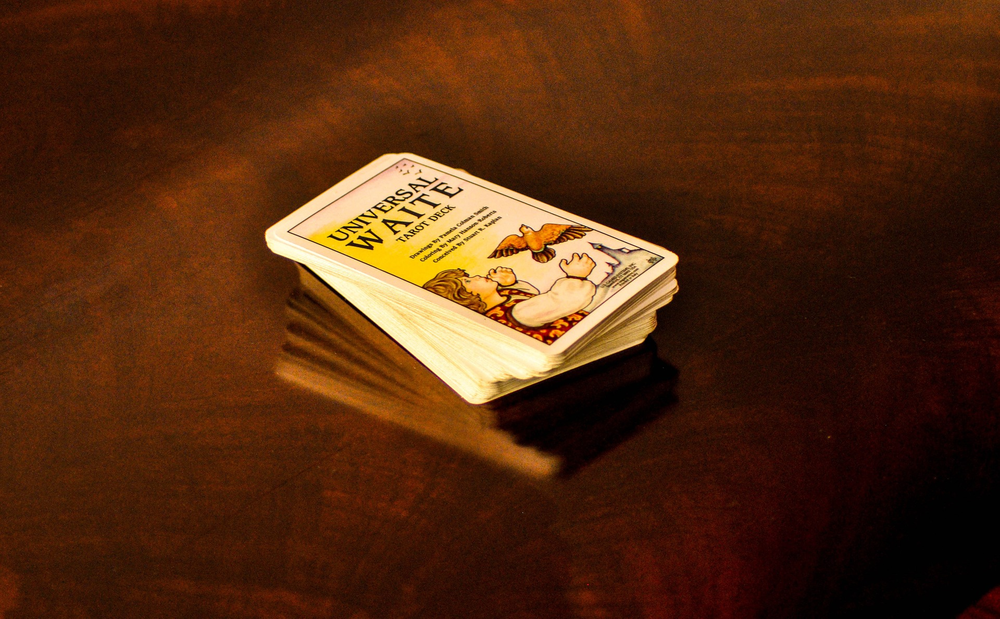

Bienvenidos a La Sibila Tarot
Soy Sibila, una cartomante argentina con años de experiencia en diferentes prácticas esotéricas y energéticas, como reiki, registros akáshicos, radiestesia y canalizacion mediumnica. Mi objetivo principal es dar a conocer estos conocimientos ancestrales de manera abierta y responsable, como herramientas de gran ayuda para nuestro crecimiento interior, despojándolas de tabues y prejuicios. Desde muy pequeña pude conectar con mi "bruja interior" y aprendí a confiar en mi intuición. Quiero ayudarte a que logres lo mismo con tu impronta personal, a tu tiempo y siguiendo tu propio camino.
